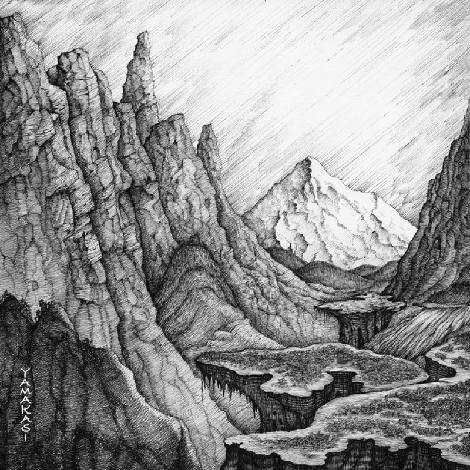

Artists
The whole roster.
Children's music, Italian pop, Afrobeats, hip-hop and country. Every artist on the label, with their five most-streamed songs and how long each one runs.

Children's music
Pinkfong
The children's music powerhouse behind the most-watched video on the internet. Short, loud, unbelievably sticky.
-
01 Baby Shark 2:16
-
02 Wheels on the Bus 2:35
-
03 Five Little Monkeys 2:05
-
04 Monkey Banana 2:24
-
05 Shark Family 2:11

Italian pop
Adriano Celentano
Sixty years of Italian pop in one voice: rock and roll imported, rewritten and sung back louder.
-
01 Azzurro 3:41
-
02 L'emozione non ha voce 4:13
-
03 Il ragazzo della via Gluck 4:16
-
04 Susanna 4:26
-
05 Confessa 4:16

Afrobeats
Asake
Amapiano log drums, fuji chants and street-Yoruba hooks. The loudest new voice out of Lagos.
-
 01 Sungba 2:47
01 Sungba 2:47 -
 02 Joha 2:35
02 Joha 2:35 -
 03 Jogodo 3:08
03 Jogodo 3:08 -
 04 Amapiano 3:22
04 Amapiano 3:22 -
05 Lonely At The Top 2:16

Hip-hop
Miyagi and Andy Panda
Two rappers from Vladikavkaz, half sung and half spoken, built on dub basslines and long reverbs.
-
 01 Kosandra 3:18
01 Kosandra 3:18 -

02 Utopia 3:00 -
03 Minor 3:13
-
 04 Saloon 2:46
04 Saloon 2:46 -
 05 I Got Love 4:04
05 I Got Love 4:04

Country
Johnny Cash
The man in black. Three chords, the truth, and a baritone that outlasted every genre it was filed under.
-
01 Hurt 3:36
-
02 Ring of Fire 2:38
-
03 Highwayman 3:03
-
04 God's Gonna Cut You Down 2:38
-
05 Ghost Riders in the Sky 3:45